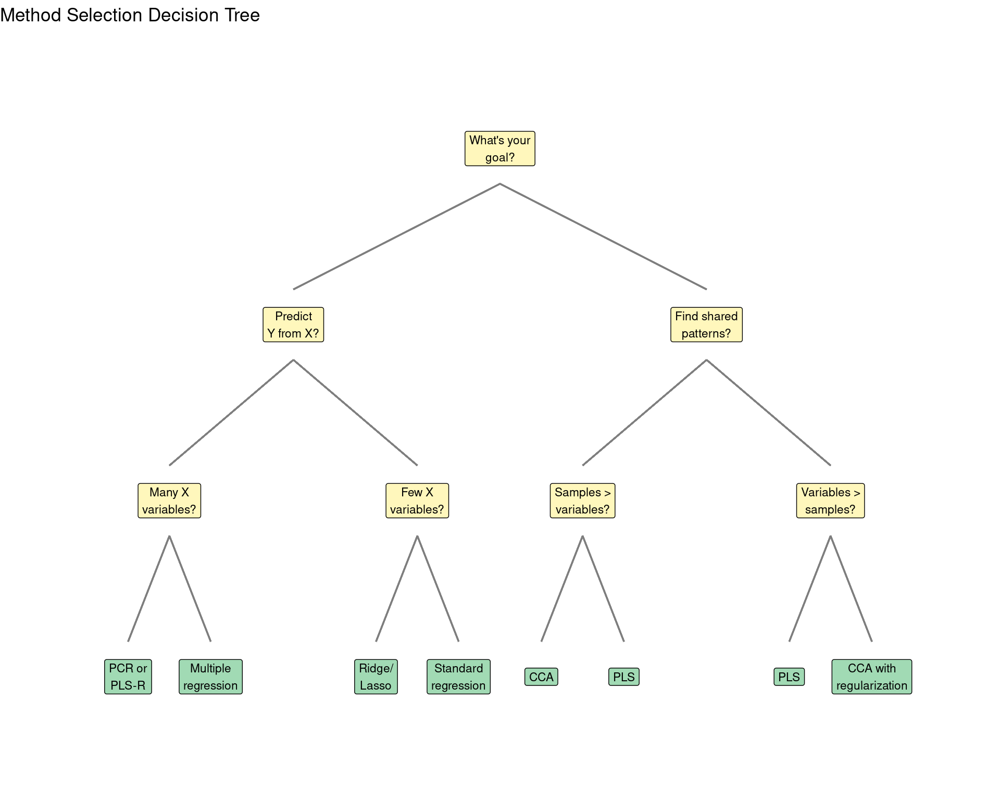
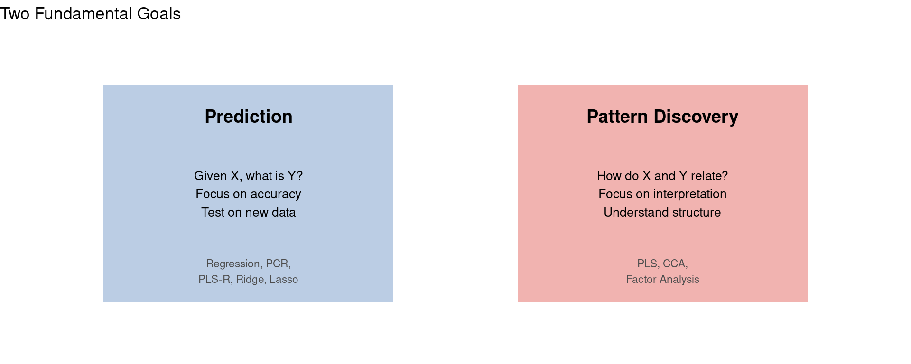
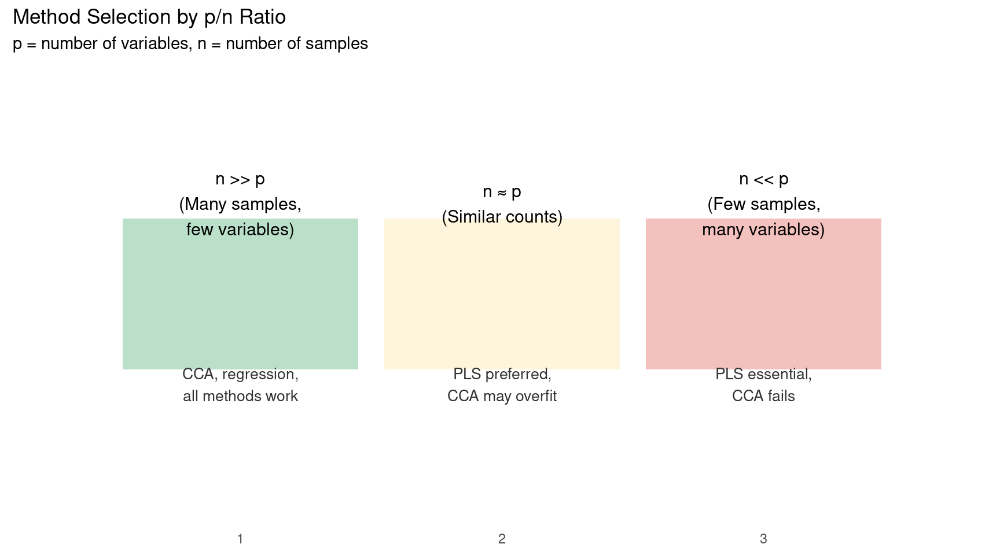
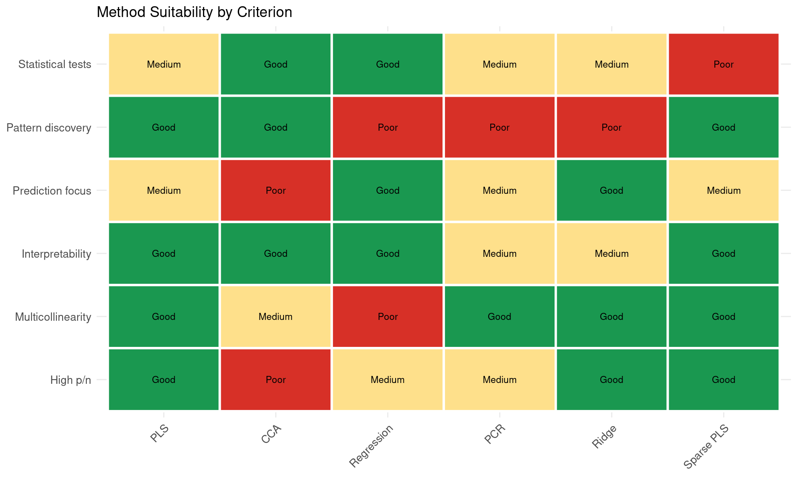

Lesson 5: Choosing the Right Method
A Practical Decision Framework
Learning Objectives
By the end of this lesson, you will be able to:
- Apply a systematic decision process to choose the right multivariate method
- Identify key characteristics of your data that guide method selection
- Recognize common research scenarios and their best-fit methods
- Understand the trade-offs between methods
The Decision Framework
Choosing between PLS, CCA, regression, and related methods depends on answering a few key questions about your data and research goals.
Key Questions to Ask
Question 1: What is Your Research Goal?
The first and most important question divides methods into two camps:

TipRule of Thumb
If you care more about predicting new cases accurately, lean toward regression methods. If you care more about understanding relationships, lean toward PLS or CCA.
Question 2: What is Your Sample Size vs. Variable Count?
This is often the deciding factor between methods:

Question 3: Do You Have Distinct X and Y Blocks?
Some methods require a clear distinction between predictors (X) and outcomes (Y):
| Scenario | Method Options |
|---|---|
| Clear X → Y relationship | PLS-R, regression, PCR |
| Symmetric exploration (no clear direction) | PLS-C, CCA |
| Single block of variables | PCA, factor analysis |
| Multiple blocks (>2) | Multi-block PLS, GCCA |
Practical Scenarios
Let’s walk through common research scenarios and the recommended methods.
Scenario 1: Brain-Behavior with Few Subjects
Situation: 50 subjects, 100 brain regions, 5 behavior scores
Subjects (n): 50 Brain variables (p): 100 Behavior variables (q): 5 p/n ratio: 2 Since p > n, CCA would overfit.RECOMMENDED: PLSWhy PLS?
- Variables exceed samples (p > n)
- CCA would produce spuriously high correlations
- PLS finds stable patterns despite high dimensionality
Scenario 2: Predicting Clinical Outcomes
Situation: 500 patients, 20 biomarkers, predict treatment response (single outcome)
Patients (n): 500 Biomarkers (p): 20 Outcome: single variable (treatment response)p/n ratio: 0.04 Since n >> p and goal is prediction:RECOMMENDED: Multiple regression or PLS-R
If biomarkers are correlated: PLS-RIf biomarkers are independent: Multiple regressionScenario 3: Genetics and Neuroimaging
Situation: 200 subjects, 10,000 SNPs, 50 brain measures
Subjects (n): 200 SNPs (p): 10000 Brain measures (q): 50 Total variables: 10050 Extremely high-dimensional!RECOMMENDED: Sparse PLS or penalized methods
Standard PLS would work but sparse PLSwould identify key SNPs more clearly.Scenario 4: Comparing Two Questionnaires
Situation: 300 participants, two 10-item questionnaires, want to understand shared structure
Participants (n): 300 Questionnaire A items (p): 10 Questionnaire B items (q): 10 Total variables: 20 n / total variables: 15 Adequate sample size, symmetric exploration.RECOMMENDED: CCA or PLS-C
Both would work well. CCA if you wantmaximum correlation, PLS-C if covariance.Quick Reference Guide
When to Use PLS
Choose PLS when:
- More variables than samples (p > n)
- Multicollinearity is present
- You want to explore covariance structure
- Robust patterns more important than optimal fit
- Sample size is limited
When to Use CCA
Choose CCA when:
- Many more samples than variables (n >> p)
- You want maximum correlation
- Statistical significance testing is important
- No clear predictor/outcome distinction
- Both variable sets are similar in size
When to Use Regression
Choose standard regression when:
- Clear single outcome variable
- Predictors are largely independent
- Good sample size relative to predictors
- Prediction accuracy is the goal
When to Use PCR
Choose PCR when:
- Multicollinearity in predictors
- Want to reduce dimensionality first
- Single outcome to predict
- Variance in X is informative
Method Comparison Matrix

Common Mistakes to Avoid
Mistake 1: Using CCA with High-Dimensional Data
Code
# DON'T do this:
# n = 100 subjects, p = 500 brain regions, q = 20 behaviors
# CCA will find perfect correlations that don't generalize
# DO this instead:
# Use PLS, which handles p > n naturallyMistake 2: Ignoring Multicollinearity
Code
# If your predictors are correlated:
set.seed(42)
n <- 100
x1 <- rnorm(n)
x2 <- x1 + rnorm(n, sd = 0.3) # Highly correlated with x1
x3 <- x1 + rnorm(n, sd = 0.3) # Also correlated
# Check correlation
cor_matrix <- cor(cbind(x1, x2, x3))
print(round(cor_matrix, 2)) x1 x2 x3
x1 1.00 0.97 0.96
x2 0.97 1.00 0.93
x3 0.96 0.93 1.00With correlations this high, standard regression will have unstable coefficients. Use PLS, PCR, or Ridge regression instead.
Mistake 3: Choosing Based on Name Recognition
Just because you’ve heard of a method doesn’t mean it’s right for your data:
- “Everyone uses regression” → But is your data suited for it?
- “PLS is too complicated” → It’s actually quite intuitive
- “CCA is more rigorous” → Not if your sample size is small
Choose based on data characteristics, not familiarity.
Decision Flowchart Summary
Here’s a simplified decision process:
- Is your goal prediction or pattern discovery?
- Prediction → Consider regression family
- Pattern discovery → Consider PLS or CCA
- Do you have more variables than samples?
- Yes → Use PLS (not CCA or standard regression)
- No → Continue to next question
- Are your X variables correlated (multicollinear)?
- Yes → Use PLS, PCR, or Ridge
- No → Standard regression may work
- Do you need formal statistical tests?
- Yes → CCA has established tests, PLS uses permutation
- No → Either works
- Do you have a clear X → Y direction?
- Yes → PLS-R or regression
- No → PLS-C or CCA
Exercises
Exercise 1: Scenario Analysis
For each scenario, decide which method you would use and explain why:
- 80 subjects, 200 genes, 5 disease markers
- 1000 subjects, 10 demographics, predicting income
- 150 subjects, 30 personality items, 30 cognitive scores
Exercise 2: Sample Size Planning
If you want to use CCA and have 50 variables in each block (X and Y), approximately how many subjects do you need?
Code
# Rule of thumb for CCA: n should be at least 10-20 times total variables
total_vars <- 50 + 50
min_n_conservative <- 20 * total_vars
min_n_liberal <- 10 * total_vars
cat("Conservative estimate:", min_n_conservative, "subjects\n")Conservative estimate: 2000 subjectsCode
cat("Liberal estimate:", min_n_liberal, "subjects\n")Liberal estimate: 1000 subjectsCode
cat("\nIf you have fewer subjects, consider PLS instead.\n")
If you have fewer subjects, consider PLS instead.Exercise 3: Method Switching
You initially used CCA but found very high correlations (r > 0.95) between latent variables. Your sample size is 80 and you have 60 variables total.
What might be happening? What should you do?
NoteAnswer
With n = 80 and p = 60, you’re in the danger zone for CCA. The high correlations are likely spurious due to overfitting.
Solution: Switch to PLS, which will give you more realistic (and generalizable) covariance estimates. You should also use cross-validation to assess how well your patterns replicate.
Summary
Key Takeaways
- Sample size relative to variables is often the deciding factor
- PLS is more robust when data is limited or variables are correlated
- CCA is preferred when you have abundant data and want maximum correlation
- Research goals matter: prediction vs. pattern discovery
- No method is universally best - match the method to your data
Final Checklist
Before running your analysis, verify:
Course Conclusion
Congratulations on completing this beginner’s guide to PLS and related methods!
You’ve learned:
- Lesson 1: Why we need multivariate methods and what latent variables represent
- Lesson 2: How the PLS algorithm works (SVD, covariance, iteration)
- Lesson 3: Different types of PLS (R vs C, behavioral vs task)
- Lesson 4: How PLS compares to CCA, PCR, and regression
- Lesson 5: How to choose the right method for your data
Next Steps
Ready to apply what you’ve learned?
- Practice: Try the exercises in each lesson
- Apply: Use PLS on your own data
- Advanced Course: Learn implementation details in our moderate/advanced course
- Read: Explore the key references below
Key References
- McIntosh & Lobaugh (2004) - PLS for neuroimaging
- Abdi (2010) - PLS methods overview
- Krishnan et al. (2011) - PLS tutorial
- Rosipal & Krämer (2006) - PLS overview
- Wegelin (2000) - CCA tutorial
Thank you for learning with us!